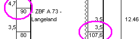

|
|
| Sie nähern sich dem angekündigten Einfahrsignal
des Bahnhofs Langeland.  Im Buchfahrplan findet man die gerade durchgeführte Herabsetzung der Geschwindigkeit auf 90km/h bei km 4,7. Außerdem gibt es im Bf Langeland einen Kilometersprung von 3,5 auf 107,6.Am Einfahrsignal steht auch gleich das Vorsignal für das nachfolgende Ausfahrsignal. Es kann hier fünf verschiedene Signalkombinationen geben: |
 Halt: Halten Sie
vor dem Signal und warten Sie auf Fahrt. Passen Sie ggf.
die Bremskraft an (Bremskraft
erhöhen, Bremskraft
verringern). Halt: Halten Sie
vor dem Signal und warten Sie auf Fahrt. Passen Sie ggf.
die Bremskraft an (Bremskraft
erhöhen, Bremskraft
verringern). |
 Dieses Hauptsignal zeigt Fahrt,
das Vorsignal kündigt das nächste Hauptsignal
in 1000m in der Stellung Langsamfahrt (40km/h)
an. Dieses Hauptsignal zeigt Fahrt,
das Vorsignal kündigt das nächste Hauptsignal
in 1000m in der Stellung Langsamfahrt (40km/h)
an. Drücken Sie unmittelbar nach Passieren des Signals Indusi-Wachsam (Enter-Taste im Zehnerblock). Die gelbe 1000Hz-Leuchte muß aufleuchten. Leiten Sie die Bremsung auf 40km/h ein. Bremsung einleiten |
 Dieses Hauptsignal zeigt Fahrt,
das Vorsignal kündigt das nächste Hauptsignal
in 1000m mit der Stellung Halt an. Dieses Hauptsignal zeigt Fahrt,
das Vorsignal kündigt das nächste Hauptsignal
in 1000m mit der Stellung Halt an. Drücken Sie unmittelbar nach Passieren des Signals Indusi-Wachsam (Enter-Taste im Zehnerblock). Die gelbe 1000Hz-Leuchte muß aufleuchten. Leiten Sie die Bremsung zum Stillstand ein. Bremsung einleiten |
 Dieses Hauptsignal zeigt Langsamfahrt
(40km/h), das Vorsignal kündigt das nächste
Hauptsignal in 1000m in der Stellung Halt
an. Dieses Hauptsignal zeigt Langsamfahrt
(40km/h), das Vorsignal kündigt das nächste
Hauptsignal in 1000m in der Stellung Halt
an. Drücken Sie unmittelbar nach Passieren des Signals Indusi-Wachsam (Enter-Taste im Zehnerblock). Die gelbe 1000Hz-Leuchte muß aufleuchten. Fahren Sie bis zum nächsten Hauptsignal maximal 40km/h. |
 Dieses Hauptsignal zeigt Langsamfahrt
(40km/h), das Vorsignal kündigt das nächste
Hauptsignal in der Stellung Fahrt Langsamfahrt
(40km/h) an. Dieses Hauptsignal zeigt Langsamfahrt
(40km/h), das Vorsignal kündigt das nächste
Hauptsignal in der Stellung Fahrt Langsamfahrt
(40km/h) an. Drücken Sie unmittelbar nach Passieren des Signals Indusi-Wachsam (Enter-Taste im Zehnerblock). Die gelbe 1000Hz-Leuchte muß aufleuchten. Fahren Sie bis zum nächsten Hauptsignal maximal 40km/h. |